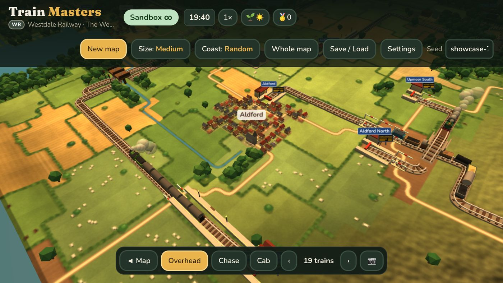
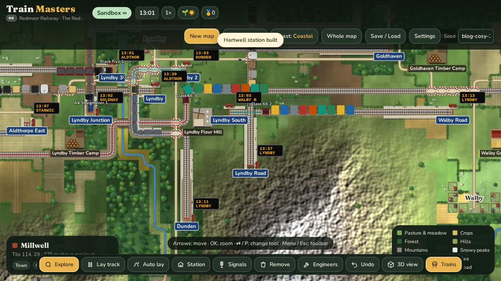
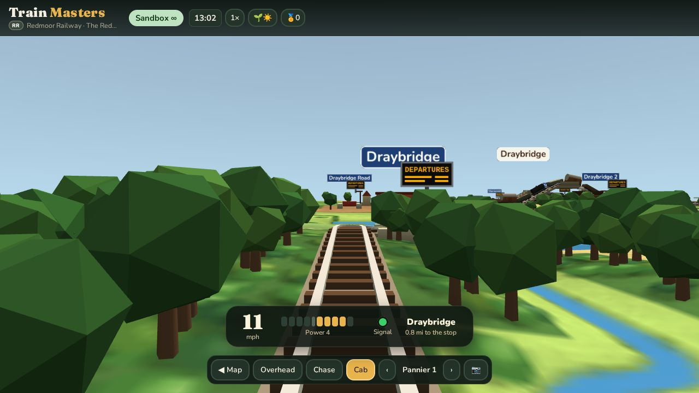
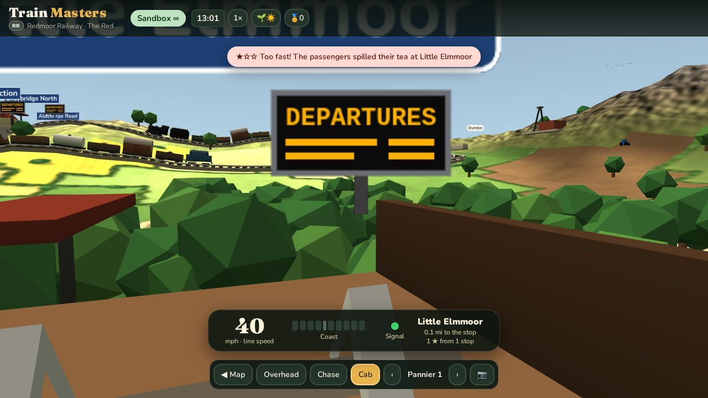
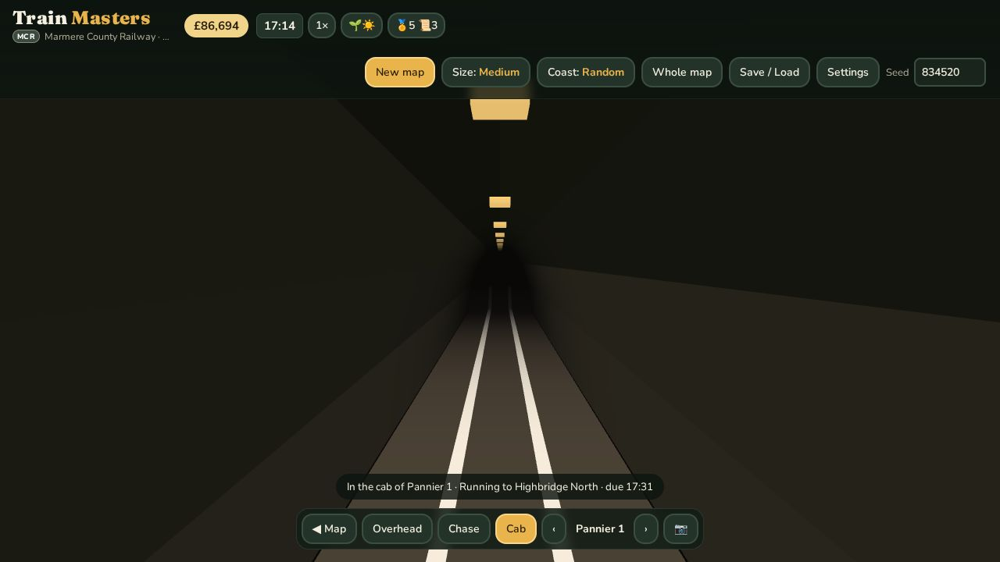
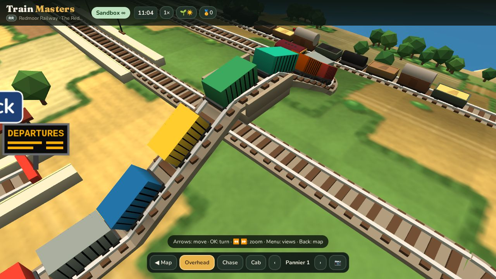
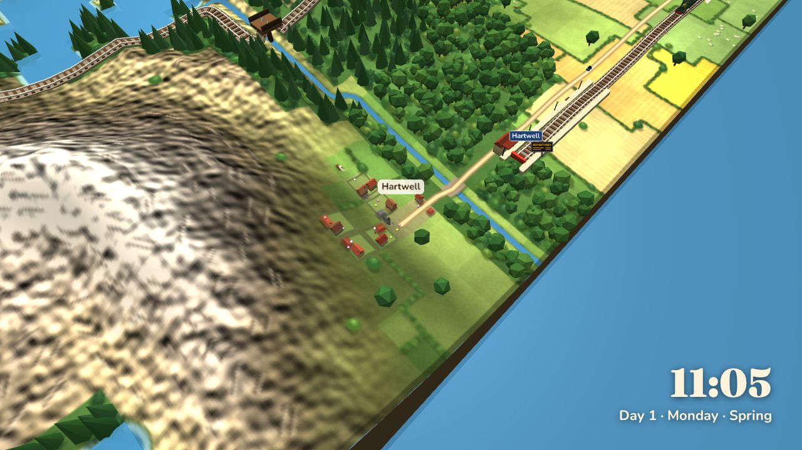
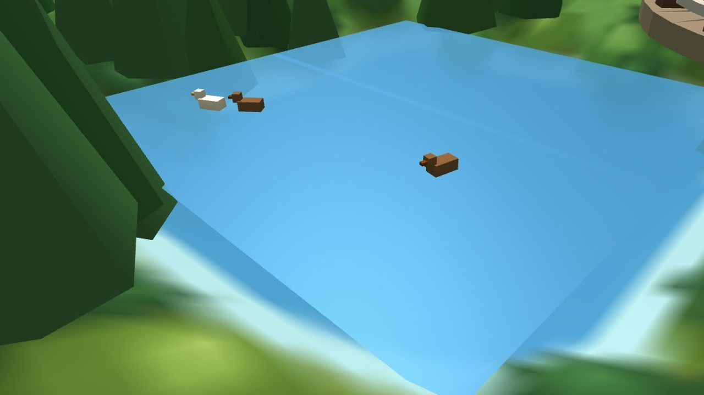
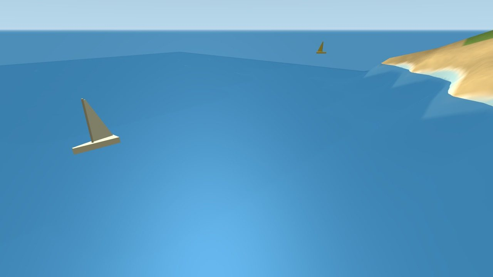

Train Masters is a cosy, peaceful railway game for the Amazon Fire TV Stick. You lay track across a randomly generated English countryside, build stations in the villages, buy steam and diesel trains, and then sit back and watch them run. There's a 2D map for building and a 3D view for watching, including a cab view so you can ride along with the driver.
Almost all of the code was written by Claude Code, Anthropic's coding agent, working in the terminal. All that was needed was direction on the style and feel: what the game should feel like, what was annoying, what was missing. This post is about how that worked in practice. It covers the setup that let Claude test on the real TV, how it was tested, and the fun features.
The approach Claude chose
The whole game is one HTML file: an 812 KB page with a 2D canvas for the map and Three.js for the 3D view. It runs inside a tiny Android app, which is just a full-screen WebView, because Fire TV Sticks run Android underneath. GitHub Actions builds the app on every push, so nobody installs Android Studio.
Claude picked that shape on purpose. A single file is easy for an agent to read, test and change, and the same page runs in a desktop browser for fast automated tests. The hard part was that a Fire TV Stick is a very modest computer, and a game that's smooth on a laptop can crawl on the TV.

Letting Claude drive the real TV
Claude didn't just write code and hope. It installed each build on a real Fire TV Stick, pressed buttons on the "remote", read the game's state, measured the frame rate and took screenshots, all over the home Wi-Fi. A typical loop looked like this:
- Change the game, run the Playwright tests locally, watch them pass.
- Run
tools/tv/deploy.sh: commit and push, wait for the CI run of that exact commit, download the APK andadb installit on the TV. - Connect to the game running on the TV through Chrome DevTools, and run JavaScript inside it: "how many trains are moving?", "what's the frame rate here?", "open the 3D cab view".
- Take a screenshot of the TV with
adb exec-out screencapand look at it, because tests can't tell you a thing looks ugly.
Being able to look at the TV made a huge difference. Many fixes started with Claude saying "that doesn't look right" on a screenshot it had just taken.
How to set it up yourself
All of this works with any WebView-based app on a Fire TV. The steps:
1. Turn on debugging on the Fire TV. Settings → My Fire TV → About, click the device name seven times to unlock Developer options, then turn on ADB debugging (and Apps from unknown sources for your own APKs). Note the TV's IP address from Settings → Network.
2. Connect over Wi-Fi from your computer and accept the prompt on the TV the first time:
adb connect 192.168.1.50:5555 # your TV's address
adb shell input keyevent 224 # wake it up
adb shell input keyevent 23 # press OK (19-22 arrows, 4 Back, 82 Menu)
adb exec-out screencap -p > tv.png # see what's on screen3. Make the WebView debuggable in debug builds of your app:
if (BuildConfig.DEBUG) WebView.setWebContentsDebuggingEnabled(true);4. Reach the page's DevTools. Each debuggable WebView exposes a socket named after its process. Forward it to your computer and ask for the page's websocket address:
PID=$(adb shell pidof com.example.yourgame)
adb forward tcp:9399 localabstract:webview_devtools_remote_$PID
curl -s localhost:9399/json # -> "webSocketDebuggerUrl": "ws://localhost:9399/devtools/page/..."5. Evaluate JavaScript in the running game. This four-line Node script is the whole "remote control" Claude used hundreds of times:
// cdp.mjs — node --experimental-websocket cdp.mjs "$WS" 'trains.length'
const [,, url, expr] = process.argv;
const ws = new WebSocket(url);
ws.onopen = () => ws.send(JSON.stringify({id:1, method:'Runtime.evaluate',
params:{expression:expr, returnByValue:true, awaitPromise:true}}));
ws.onmessage = m => { const d = JSON.parse(m.data); if (d.id===1) {
console.log(JSON.stringify(d.result.result.value ?? d.result)); process.exit(0); } };A few lessons from doing this daily:
- Sign debug builds with a fixed key (Claude keeps it as a CI secret), so each new build installs over the last one and keeps the save games.
- The store copy is signed by Amazon, not by you, so nothing you build can install over it. Claude ended up giving debug builds their own package name ("Train Masters Dev") so they sit next to the real one.
- Measure on the device. CSS
backdrop-filterand canvasctx.filterlooked fine on a laptop and took the stick down to 2–5 frames a second. Now they're banned in the project'sCLAUDE.md. - A sleeping TV pauses the app, so builds and measurements stall. Keyevent 224 wakes it.
- Write the rules down.
CLAUDE.mdholds the TV's address, the commands and the house rules ("never change the clock on the real saved railway"), so a fresh Claude session can carry on where the last one stopped.
Tests first, then the TV
Nearly every change started with a failing test. The suite now has about 50 Playwright test scripts, covering things like "trains keep a safe distance", "the whistle sounds when you ride in the cab" and "the passing loop is long enough for the longest train". Headless Chromium has quirks with WebGL: it stops drawing 3D frames after about half a second. So the tests step the 3D scene by hand, and Claude grabs the 3D canvas directly when it wants a picture.
Given a brief of "four hours of bug hunting on the TV", Claude also mashed random remote buttons at the game (about 4,500 presses), copied real saved railways off the TV and ran them for days of game time on the computer, and checked the TV's graphics memory for leaks. Then it sent back a table of fourteen fixes with before-and-after screenshots.
Fun features
Drive it yourself
In the cab or chase view you can take over any train. Up on the remote adds power (five notches), Down brakes (four notches), and OK blows the whistle. Signals still apply, so if you charge a red light you get an emergency stop. Pull into a platform and you're marked out of three stars:
★★★ Perfect stop! ★★☆ Good stop ★☆☆ Too fast! The passengers spilled their tea


Riding through the tunnels
Lay track into a hill and you get a tunnel. In the cab view you go in with the driver: the outside world disappears, it's just you, the rails and the tunnel walls until daylight appears at the far end. That took more work than it sounds. The camera has to fit inside the tunnel's bore, and anything outside the tunnel has to stay hidden, so the hillside doesn't poke through the walls.

The rest of the timetable
- Real steam. Engines chuff slowly as they pull away and quicken as they gather speed, using real recordings. Every class has its own whistle or two-tone horn.
- Build a network for me. In Sandbox, pick a map and Train Masters lays a whole railway for you: stations, passing loops, signals and flyovers where lines cross. Then it picks the trains, or lets you choose them.
- Flyovers. Where two lines cross, one now goes over the other on a bridge, so trains never wait at a crossing.
- Display mode. Turn the TV into a living picture. The camera drifts between trains, stations and the countryside, with a little clock caption, and it can start by itself when nobody's pressing buttons.
- Seasons, weather, day and night, golden evenings, glowing windows at night and departure boards at every station.


Shipping it
Claude also handled the boring-but-scary parts: a signed release build, the privacy policy page, store art (including a photo-real render of a little engine, made in Blender from a script), the in-app purchase for the 99p Pro upgrade, tested end to end with Amazon's App Tester, and the store listing text. Train Masters is now on the Amazon Appstore for Fire TV. Updates go out through Amazon's App Submission API: Claude builds the new version, uploads it as a draft, and stops until it's told to "submit".
And finally: ducks
The latest addition is the most heart-warming one. With countryside life on, the world around the railway gets busy in a quiet sort of way. Villagers are out and about depending on the time of day, cars and lorries pootle between villages, and tractors work the fields. Then there's the water:
- Ducks paddling about on the ponds,
- rowing boats drifting on the lakes,
- yachts sailing along the coast,
- narrowboats cruising the canals and waiting their turn at the locks,
- and fishing boats heading out from the harbour in the morning and home again in the afternoon.


None of it changes how you play. It just makes the little world feel lived in, which is the whole point of a cosy game. Put the kettle on, pick a train, and watch it go.